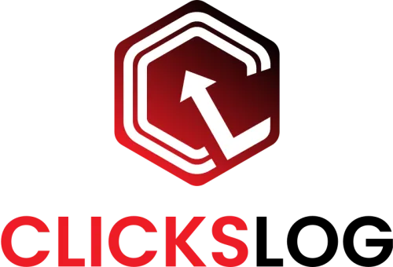

ClicksLog Professional - Dokumentieren wie von selbst
Produktprofil · Marktplatz-Daten 2026-10-09 · Verkaufsseiten-Recherche 2026-10-09 · Kategorien: Software
- ClicksLog Professional - Dokumentieren wie von selbst ist ein/e Software in Software, vertrieben über den Digistore24-Marktplatz von Anbieter Cridal, gelistet seit 2024-01-11.
- Listenpreis $313.21; Digistore24 meldet — Checkout-Konversion, — Stornierungsquote und 15 % Affiliate-Provision.
- Verdienst pro Verkauf (Affiliate): $46.98 (Anbieter-seitige Statistik, keine Prognose).
Interesse an ClicksLog Professional - Dokumentieren wie von selbst? Aktueller Preis, Boni und Garantiebedingungen finden Sie auf der offiziellen Seite des Anbieters:
Offizielle Verkaufsseite ansehen
Affiliate-Link (Werbung) — wir verdienen ggf. eine Provision, ohne Mehrkosten für Sie.

Marktplatz-Daten
| Produkttyp | Software |
|---|---|
| Preis | $313.21 (Subscription) |
| Affiliate-Provision | 15 % |
| Garantie/Rückgabe | Laut Verkaufsseite des Anbieters — vor dem Kauf auf der offiziellen Seite prüfen |
| Anbieter | Cridal (gelistet seit 2024-01-11) |
| Marktplatz-Statistiken* | Checkout-Konversion — · Stornoquote — · Verdienst/Verkauf $46.98 |
* Anbieter-seitige Statistiken von Digistore24; sie hängen von der Traffic-Qualität ab und sind keine Prognose.
Marktplatz-Beschreibung des Anbieters
Entdecken Sie die ultimative Lösung für Ihre Dokumentationsanforderungen: “Clickslog-Professional”. Dieses fortschrittliche Tool wurde speziell entwickelt, um Ihre Arbeit zu vereinfachen und Klick für Klick Dokumentationen mit Leichtigkeit zu erstellen. Hauptmerkmale und Funktionen: Unbegrenzte Screenshots: Keine Beschränkung der Dokumentationsschritte (Screenshots). Ideal für umfassende und detai…
Von der Verkaufsseite des Anbieters
Seitentitel: ClicksLog - Digistore24
Abschnitts-Überschriften
- ClicksLog
- System requirements
- ClicksLog
- System requirements
- ClicksLog
- System requirements
Einstiegstext
Discover the ultimate solution for your documentation needs: "Clickslog-Professional". This advanced tool has been specifically designed to simplify your work and create click-by-click documentation with ease.
Additional services: Free support via email: If you have any questions or problems, our support team will be at your disposal for the entire duration of the contract. Free updates: Benefit from regular free updates and always stay up to date. With Clickslog-Professional, documentation becomes child's play. Use the comprehensive functions to save time and achieve professional results. It's the perfect tool for anyone who values quality and efficiency.
Installation: Administrator rights are required for the installation/uninstallation of ClicksLog.
System and administrator processes: Clicks on critical system processes such as the task manager as well as processes of higher privileged accounts (e.g. administrator) cannot be recorded. For this purpose, ClicksLog must be run explicitly under this user account.
Preisangaben auf der Seite: $10 · €28.00 · €28. · €25.00 · €23.00 · €28 · €280 · €250.00 · €230.00
CTA-Buttons: „Buy now"
Recherche-Methode: rohes HTML · 1229 Wörter · Qualität: rich · recherchiert am 2026-10-09. Vollständige Recherche-Datei (MD) ↗
Wie Produkte dieser Art geliefert werden
Allgemeiner Hinweis zu diesem Produkttyp (keine anbieterspezifische Anleitung): Software wird digital geliefert — entweder als direkter Download oder per Lizenzschlüssel/Mitgliederbereich nach dem Checkout. Für die genaue Anwendung von ClicksLog Professional - Dokumentieren wie von selbst sind die offizielle Verkaufsseite und die enthaltenen Materialien maßgeblich.
Gut zu wissen
- Hoher Preis: $313.21 ist eine erhebliche Ausgabe — prüfen Sie, ob es einen Zahlungsplan gibt, und vergleichen Sie zuerst die günstigeren Alternativen der Kategorie.
- Keine Garantie-Formulierung in unserer Recherche gefunden — bestätigen Sie das Rückgabefenster auf der offiziellen Seite, bevor Sie kaufen.
Häufige Fragen zu ClicksLog Professional - Dokumentieren wie von selbst
Was ist ClicksLog Professional - Dokumentieren wie von selbst?
ClicksLog Professional - Dokumentieren wie von selbst ist ein Angebot des Typs „Software" im Digistore24-Marktplatz, Anbieter: Cridal, gelistet seit 2024-01-11. Eingepflegt unter Software. Digistore24 wickelt Checkout, Lieferung und Rückgaben ab.
Wie viel kostet ClicksLog Professional - Dokumentieren wie von selbst?
Der Digistore24-Marktplatz listet es für $313.21 (subscription). Preise legt der Anbieter fest und können sich ändern — der Marktplatz-Eintrag oben zeigt den Schnappschuss; die offizielle Verkaufsseite zeigt den aktuellen Preis.
Gibt es eine Geld-zurück-Garantie für ClicksLog Professional - Dokumentieren wie von selbst?
Unsere Verkaufsseiten-Recherche hat keine explizite Garantie-Formulierung gefunden. Viele Digistore24-Produkte bieten 60 Tage Geld-zurück, aber das legt jeder Anbieter selbst fest — bestätigen Sie es auf der offiziellen Verkaufsseite, bevor Sie kaufen.
Ist ClicksLog Professional - Dokumentieren wie von selbst seriös?
Wir bewerten keine Seriosität — wir veröffentlichen überprüfbare Zahlen: Anbieter Cridal (gelistet seit 2024-01-11), Checkout-Konversion —, Stornoquote —, Affiliate-Verdienst/Verkauf $46.98 (alles Anbieter-seitige Marktplatz-Statistiken). Lesen Sie unsere 6-Punkte-Bewertungsmethode und entscheiden Sie anhand der Zahlen — oder diskutieren Sie ClicksLog Professional - Dokumentieren wie von selbst auf GitHub.
Wo kann ich ClicksLog Professional - Dokumentieren wie von selbst sicher kaufen?
Nur über die offizielle Verkaufsseite, die auf dieser Seite verlinkt ist (Checkout und Rückgaben laufen über Digistore24). Prüfen Sie dort Preis und Garantie vor der Bestellung. Der Link ist ein Affiliate-Link — der Kauf unterstützt diese Website ohne Mehrkosten für Sie.
Ähnliche Angebote in Software

Maya: digitale Assistentin für WhatsApp und Telefon Maya beantwortet Kundenanfragen kleiner Betriebe rund um die Uhr auf WhatsApp und im Paket mit Telefon auch

Zencaptcha schützt Webseiten vor Spam und betrügerischen Aktivitäten. Falsche und temporäre E-Mail-Adressen werden erkannt und Bots werden herausgefordert, noch

+++ Willkommen beim Meisterbot-Partnerprogramm! +++ Verdienen Sie über 850 EUR Provision pro Sale mit der ersten schlüsselfertigen KI-Telefonzentrale für den Mi

Verdienen Sie 40 % Provision!Werden Sie Affiliate und profitieren Sie von unserem attraktiven 40% Partnerprovisionssatz – eine der höchsten Provisionen auf Digi
Ähnliche Preislage in Software

Das ProduktAutomation Studio übernimmt wiederkehrende Klicks und Dateneingaben in Windows-Anwendungen. Du zeichnest einen Ablauf einmal auf und spielst ihn beli
Bewirb kontaktkarte.com und verdiene eine attraktive 50%-Lifetime-Provision mit einer modernen Lösung für digitale Visitenkarten. Eigene Domain, individuelle Pr
![[Live] Sportwetten mit KI | Software | +10% Conversion](../assets/products/56820.webp)
Verdiene ~100€ wiederkehrende Provision pro Sale mit unserer KI-Sportwetten Software Empfehle unser kostenloses Online-Training mit über 10% Sales-Conversion un

PRIXUS CallButler – Professioneller KI-Telefonassistent als Desktop-Software. Nimmt Anrufe entgegen, wenn niemand ans Telefon geht – mit individueller Begrüßung
Ähnliche Suchanfragen
Wo Sie es sich ansehen können
Wo Sie es sich ansehen können
Aktuelle Preise, Garantie und Boni finden Sie auf der offiziellen Verkaufsseite:
Offizielle Verkaufsseite ansehen
Das ist ein Affiliate-Link (Werbung) — kaufen Sie darüber, verdienen wir ggf. eine Provision, ohne Mehrkosten für Sie.
Quellen & weiterführende Informationen
- Offizielle Verkaufsseite (aktueller Preis, Garantie, Boni): www.checkout-ds24.com/product/533821 (Affiliate-Link)
- Öffentliche Digistore24-Produktseite: digistore24.com/product/533821
- Vollständige Recherche-Datei (Markdown, versioniert): content/products/46977-clickslog-professional-dokumentieren-wie-von-selbst.md
- Marktplatz-Kategorie: Software
Wie wir Produkte wie ClicksLog Professional - Dokumentieren wie von selbst bewerten
Sechs Prüfungen, ausschließlich mit offiziellen Marktplatz-Zahlen. Die vollständige Bewertungsmethode lesen · unsere Recherche-Standards & Kennzeichnung.
Fragen oder eigene Erfahrungen mit ClicksLog Professional - Dokumentieren wie von selbst?
Praxis-Tests veröffentlichen wir erst, nachdem wir ein Produkt selbst gekauft haben — aber Ihre Erfahrung hilft anderen Lesern: Diskussion zu ClicksLog Professional - Dokumentieren wie von selbst auf GitHub starten/verfolgen. Falsche Zahl gefunden? Korrektur melden — jede Seite zeigt ihre Datenstände, Korrekturen gelten für die ganze Website.